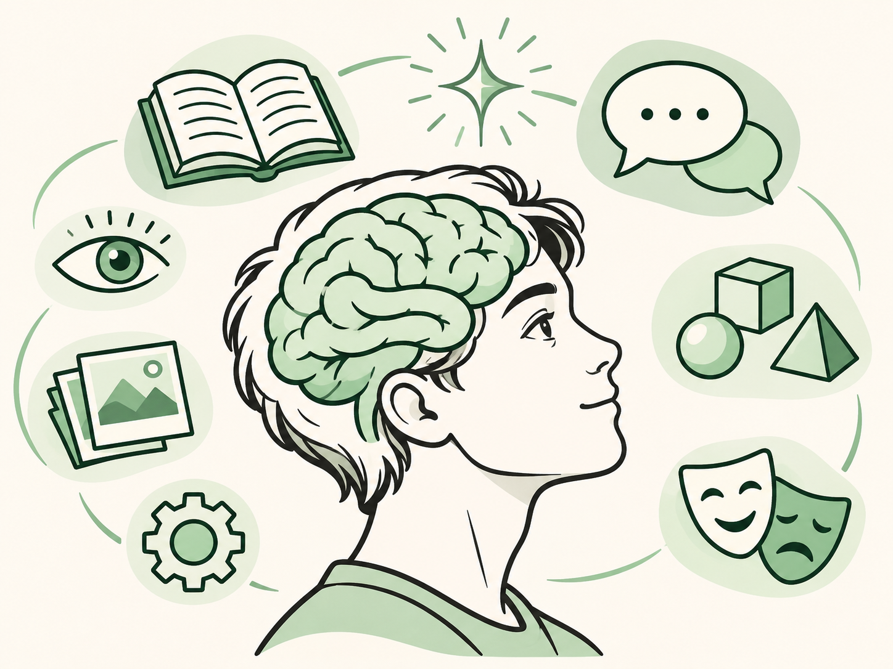

Кратковременное воспроизведение
Список изучается в течение одной минуты. Затем слова записываются по памяти без подсказок. Порядок слов не имеет значения.
В ходе двух опытов предстоит проверить, сколько слов удаётся воспроизвести после краткого предъявления и помогает ли смысловая связь запоминать пары слов.

Память позволяет сохранять и воспроизводить информацию. В этой работе сравниваются два учебных способа запоминания: предъявление отдельных слов и запоминание связанных или не связанных по смыслу пар.
Список изучается в течение одной минуты. Затем слова записываются по памяти без подсказок. Порядок слов не имеет значения.
Сначала предъявляются пары со смысловой связью, затем — случайные сочетания. После каждого предъявления нужно восстановить второе слово по первому.
Для чистоты опыта желательно работать самостоятельно, не записывать слова во время предъявления и не возвращаться к списку до завершения воспроизведения. Информация в полях ответа не отправляется на сервер и не сохраняется после закрытия или обновления страницы.
На экране появятся 25 слов. На их изучение отводится 60 секунд. После окончания времени список закроется автоматически.
Список пока скрыт. После нажатия кнопки появятся слова. Постарайтесь запомнить как можно больше.
Начало опыта — по нажатию кнопки.
Допускается любой порядок. При проверке засчитывается каждое правильно воспроизведённое слово один раз. Ошибки в написании могут потребовать проверки вручную.
Оба набора содержат по 8 пар слов. Первый набор объединяет слова по смыслу, второй состоит из сочетаний без очевидной смысловой связи. Для каждого набора отводится одинаковое время — 40 секунд.
После скрытия списка на экране останутся первые слова пар. Впишите второе слово каждой пары, затем сравните результаты двух попыток.
Пары скрыты. Попробуйте запомнить их без подсказок. Не возвращайтесь к предыдущему набору.
Начало этапа — по нажатию кнопки.
Запишите полученные результаты после выполнения обоих опытов. При необходимости числа можно перенести в тетрадь.
Сравните полученные числа и объясните, чем запоминание по смыслу отличается от механического запоминания.
Вывод можно перенести в тетрадь. Введённый текст не сохраняется автоматически.